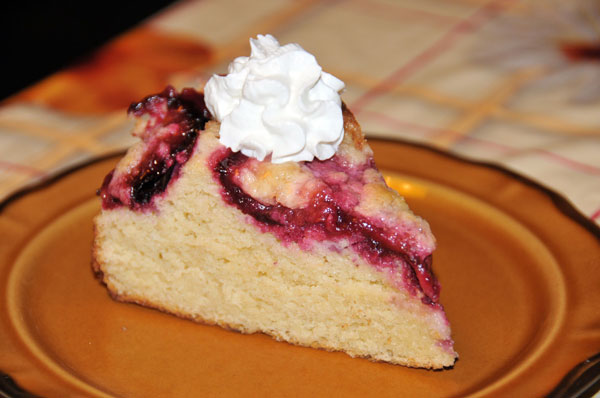

Drożdżówka ze śliwkami
Ciasto drożdżowe zawsze mnie przerażało - to przygotowywanie drożdży, czekanie, aż urośnie raz i drugi, wyrabianie do upadłego, strach przed zakalcem, brr, koszmar. Ale można zrobić drożdżówkę "na skróty", to znakomita podstawa do wszelkiego rodzaju rogalików, rolad i zwykłych placków z owocami (o ile nie chcemy pochwalić się puszystym ciastem z wielkimi dziurami ;-)). Bierzemy sporę miskę, na jej dnie rozkruszamy 5 dag drożdży, wsypujemy pół szklanki cukru (ewentualnie cukier waniliowy), dolewamy pól szklanki mleka i pół szklanki oleju, dorzucamy dwa rozbełtana jajka i dwie i pół szklanki mąki (z odrobiną soli) i przykrywamy talerzykiem lub lnianym ręczniczkiem, pozostawiając na kilka godzin w spokoju (można nawet zapomnieć o cieście na całą noc).

A potem mieszamy, wylewamy na wysmarowaną tłuszczem blaszkę i ozdabiamy górę owocami (w tym przypadku połówkami śliwek, mniam). Pieczemy około pół godziny w piekarniku nastawionym na 180 stopni (temperatura uniwersalna). I wiecie co? Najlepiej smakuje na gorąco, tuż po wyciągnięciu z pieca. ;-)